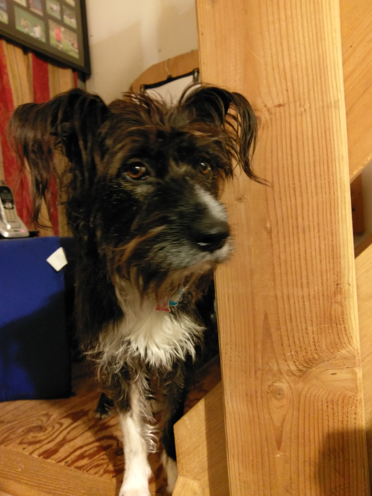

Greetings! You can call me Daniel.
I graduated from Hampshire College in
Amherst Massachusetts in 2015.
I have worked part time retail jobs up until now.
I like to play Magic: The Gathering and Hearthstone in my free time.
I'm even a certificed judge for Magic: The Gathering tournaments.
I also have a couple of dogs that I love dearly!
My girlfriend and I adopted Apollo last year.
We have no idea what kinds of breeds he has.
He is a sweet and needy boy, and we both adore him.
He loves to rip open boxes and take toys from Bramble.

We adopted Bramble a year and a half ago.
She is part boxer, german shepard, and a few others.
She loves to swim more than life itself, and she will be
your best friend if you give her some food.